.jpg) 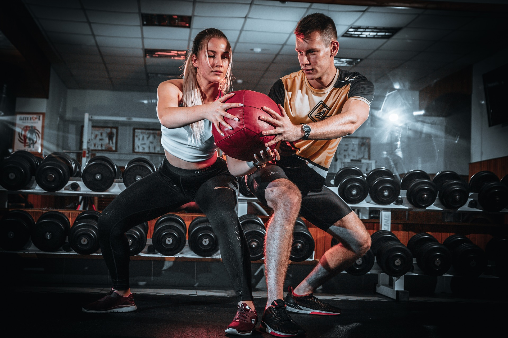
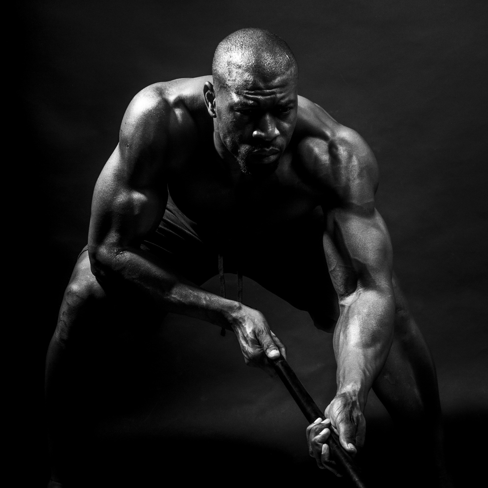
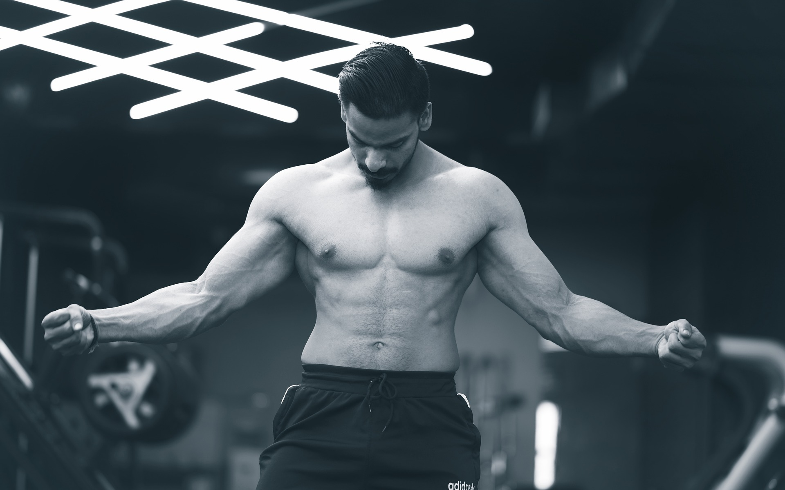
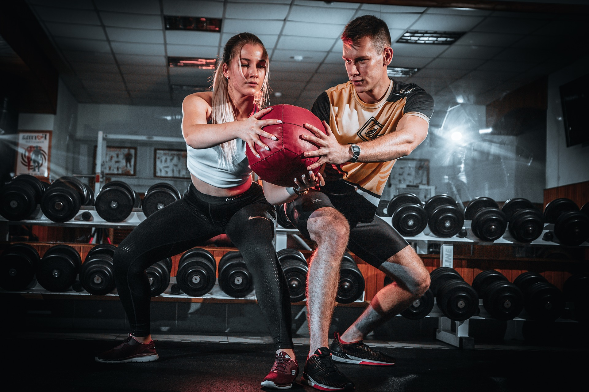
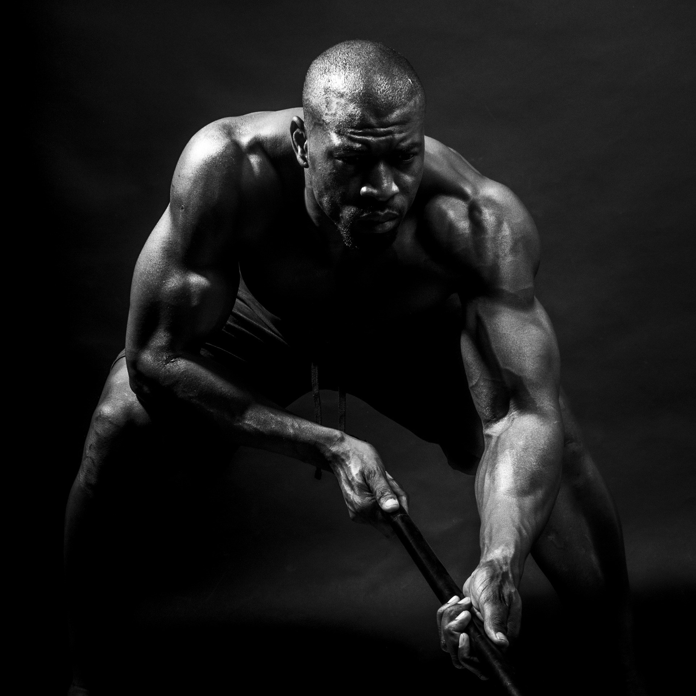
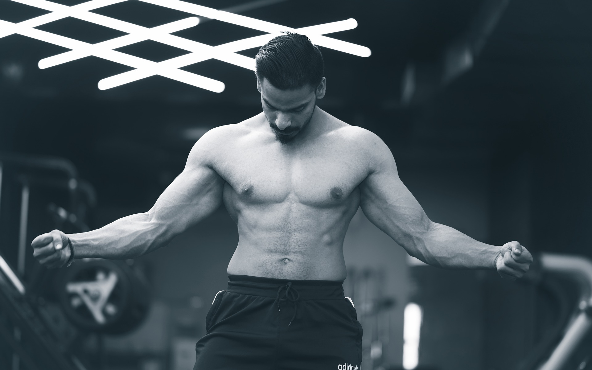
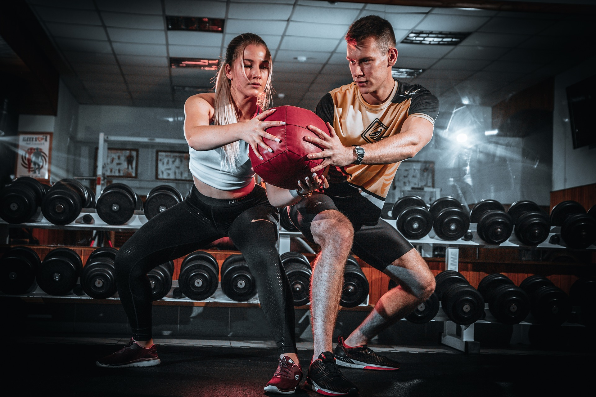
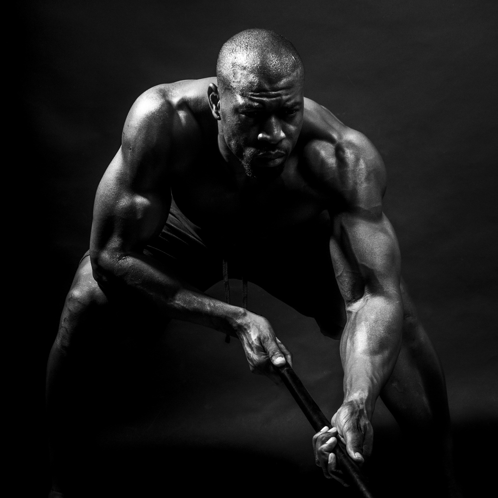
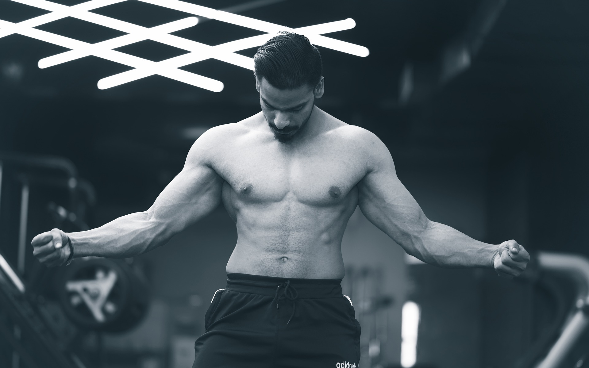
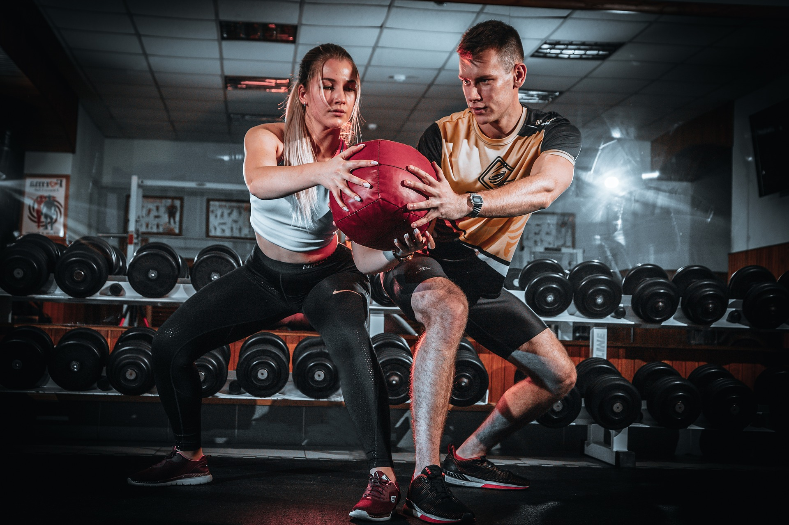
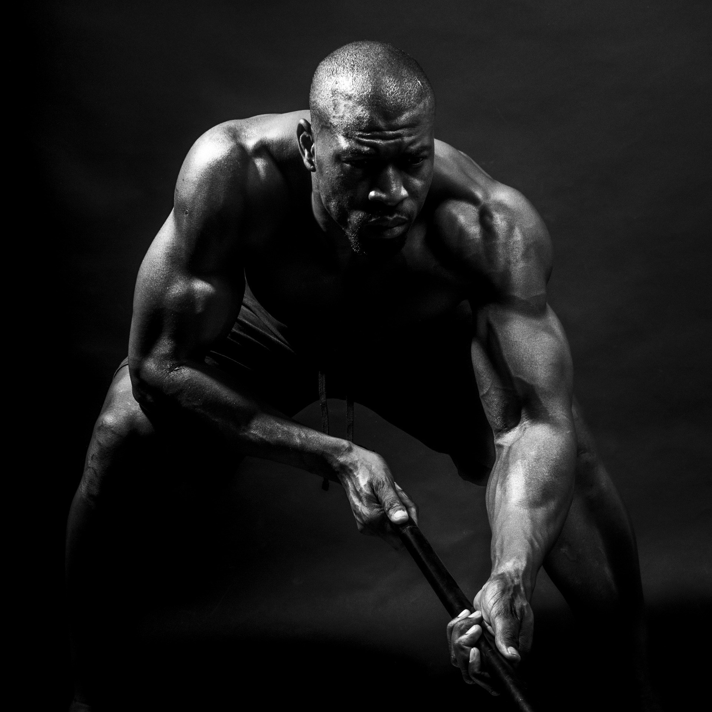
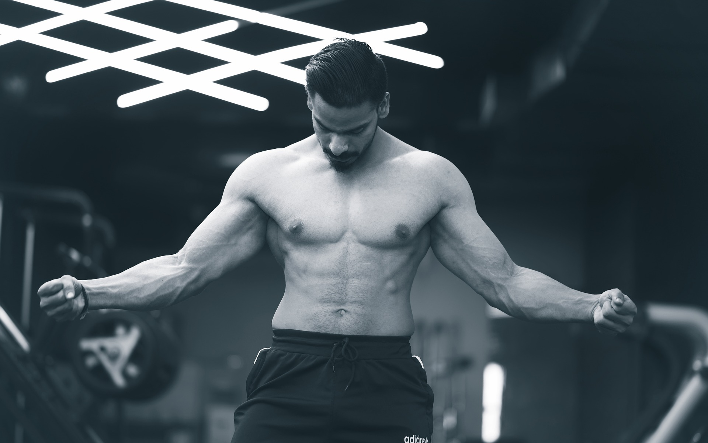
Mechanizm wszystkich diet opiera się na deficycie kalorycznym. Jeżeli znacie diety z różnych czasopism, dieta keto, dieta kapuściana, warzywna itp. te wszystkie diety mają jeden cel. Osoba, która je stosuje ma być na deficycie kalorycznym. To własnie deficyt powoduje, że tracimy tkankę tłuszczową. Dlaczego to działa? Ponieważ ograniczamy pewną grupę prodktów w konsewkencji jemy mniej. Ograniczenie pewnej grupy prodoktów, jest bardzo pomocne, ale ma swoje minusy, ponieważ może być trudno utrzymać taką dietę przez dłuższy czas. Jeżeli chcemy zejść to niskiego poziomu tkanki tłuszczowej może to być utrudnione, przez mechanizmy obronne, które skutecznie uruchomią hormony odpowiedzialne z wieksze uczucie głodu, i niski poziom nasycenia.
Podsumowując, kluczowe aspekty procesu utraty wagi to skuteczny deficyt kaloryczny oraz zdrowe nawyki żywieniowe. Diety, takie jak keto, kapuściana czy warzywna, mają wspólny cel - osiągnięcie deficytu kalorycznego poprzez ograniczenie spożycia. Ograniczając pewne grupy produktów, zmniejszamy ilość spożywanych kalorii, co przyczynia się do spadku tkanki tłuszczowej. Warto jednak mieć na uwadze, że niektóre diety mogą być trudne do utrzymania długoterminowo. Dodatkowo, unikanie podjadania między posiłkami oraz rezygnacja z napojów o dużej zawartości cukru pomagają kontrolować ilość spożywanych kalorii. Wybór odpowiednich metod przygotowywania posiłków, takich jak gotowanie czy pieczenie zamiast smażenia na oleju, również wpływa na ograniczenie kaloryczności. Rozpoznawanie i zaspokajanie głodu psychicznego oraz fizycznego, wybór produktów o wysokim indeksie sytości i objętości, a także dbałość o jakość snu i równowagę hormonalną to kolejne kluczowe elementy efektywnego procesu odchudzania. Podsumowując, skuteczna utrata wagi opiera się na równowadze między ilością spożywanych a spalanych kalorii, ale również na kształtowaniu zdrowych nawyków żywieniowych, które można utrzymać przez dłuższy czas. To holistyczne podejście pozwala osiągnąć trwałe efekty w kierunku poprawy kompozycji ciała.
Zapraszam Cię do skorzystania z naszych usług, aby razem rozpocząć trening, przygotować spersonalizowaną rozpiskę diety i zapewnić Ci indywidualne podejście. Nasze doświadczenie i wiedza pozwolą Ci osiągnąć Twoje cele fitnessowe w sposób efektywny i zrównoważony. Dzięki naszej pomocy będziesz mógł/a wypracować zdrowe nawyki żywieniowe, poprawić swoją kondycję fizyczną i zyskać pełną pewność siebie. Skontaktuj się z nami już dzisiaj, aby zacząć swoją drogę do zdrowia i dobrej formy!
793-428-923
Szczecin
000-000-000
Szczecin